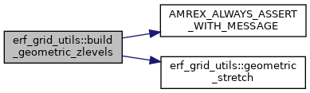
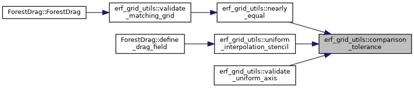
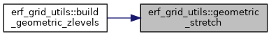
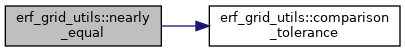
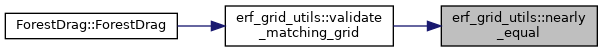
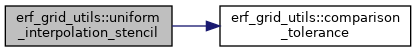
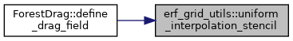
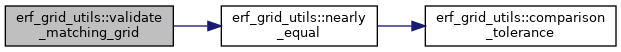
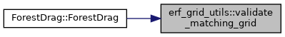
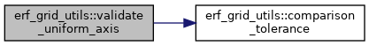

- Generated by
 1.9.1
1.9.1
|
ERF
Energy Research and Forecasting: An Atmospheric Modeling Code
|
Classes | |
| struct | UniformGridMetadata |
| struct | GeometricStretch |
| A geometrically stretched vertical grid: dz_k = dz0 * ratio^k. More... | |
| struct | InterpolationStencil |
Functions | |
| AMREX_GPU_HOST_DEVICE AMREX_FORCE_INLINE amrex::Real | comparison_tolerance (amrex::Real lhs, amrex::Real rhs) noexcept |
| bool | nearly_equal (amrex::Real lhs, amrex::Real rhs) |
| std::string | validate_uniform_axis (const amrex::Vector< amrex::Real > &coordinates, int expected_size, const std::string &axis_name, const std::string &field_description, amrex::Real &origin, amrex::Real &spacing) |
| std::string | validate_matching_grid (const UniformGridMetadata &reference, const UniformGridMetadata &candidate, const std::string &reference_description, const std::string &candidate_description) |
| AMREX_GPU_HOST_DEVICE AMREX_FORCE_INLINE GeometricStretch | geometric_stretch (amrex::Real dz0, amrex::Real z_top, int nz, amrex::Real tol) noexcept |
| Solve for the geometric stretch factor that fills a domain of depth z_top with nz layers whose first is dz0 thick. More... | |
| GeometricStretch | build_geometric_zlevels (amrex::Vector< amrex::Real > &zlevels, amrex::Real dz0, amrex::Real z_top, amrex::Real tol) |
| Fill a staggered z-level array with a geometrically stretched grid. More... | |
| AMREX_GPU_HOST_DEVICE AMREX_FORCE_INLINE InterpolationStencil | uniform_interpolation_stencil (amrex::Real coordinate, amrex::Real origin, amrex::Real spacing, int point_count) noexcept |
|
inline |
Fill a staggered z-level array with a geometrically stretched grid.
zlevels must already be sized to nz+1; its length is what sets nz. The top level is assigned z_top exactly rather than by accumulation, so the array closes on the domain top to the last bit even though the sum that got there is only accurate to tol.
| [in,out] | zlevels | staggered z-levels, sized nz+1 on entry and filled on exit |
| [in] | dz0 | requested thickness of the first layer |
| [in] | z_top | depth of the column to be filled |
| [in] | tol | convergence tolerance passed to geometric_stretch |

|
noexcept |
Referenced by nearly_equal(), uniform_interpolation_stencil(), and validate_uniform_axis().

|
noexcept |
Solve for the geometric stretch factor that fills a domain of depth z_top with nz layers whose first is dz0 thick.
The layer thicknesses are dz0 * ratio^k, so the column depth is the geometric sum
S(ratio) = dz0 * (ratio^nz - 1) / (ratio - 1),
and the factor wanted is the root of S(ratio) = z_top, found by Newton iteration from ratio = 1.03. The derivative is analytic, so the iteration converges in a handful of passes for any physically sensible (dz0, z_top, nz).
This is the natural construction for an idealized case, where dz0 and z_top are what the user knows a priori and the vertical distribution between them is free. It is not the right construction when a file already carries a vertical distribution worth keeping – see wrf_mean_layer_thickness in ERF_InitFromWRFInput.cpp – because one constant factor cannot represent a stretch ratio that varies with height.
A dz0 at or above the uniform spacing z_top/nz cannot be stretched to fit, since the thicknesses only grow: that case returns the uniform grid with uniform = true, rather than a factor below one that would thin the layers aloft. A single layer is the same situation for a different reason – the sum of one layer is dz0 whatever the factor is, so S has no root and its derivative is identically zero – and is answered the same way.
| [in] | dz0 | requested thickness of the first layer |
| [in] | z_top | depth of the column to be filled |
| [in] | nz | number of layers |
| [in] | tol | convergence tolerance on the column depth, in the same units as z_top |
Referenced by build_geometric_zlevels().

|
inline |
Referenced by validate_matching_grid().


|
noexcept |
Referenced by ForestDrag::define_drag_field().


|
inline |
Referenced by ForestDrag::ForestDrag().


|
inline |
